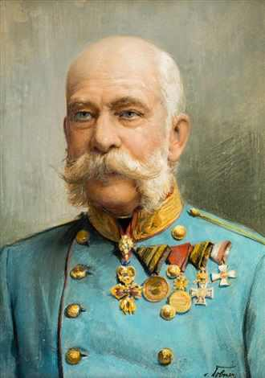
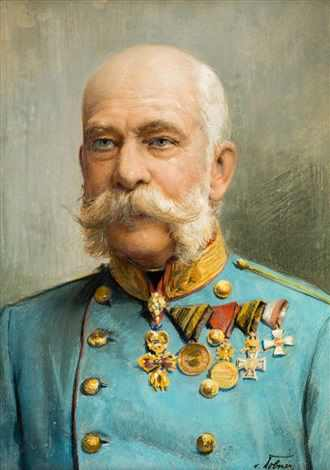

La 18 august 1830 a venit pe lume cel căruia îi va fi hărăzit să domnească peste Imperiul Austriac-Franz Joseph. Alegerea numelor nu a fost lăsată la voia înclinațiilor personale, ci cum se întâmplă întotdeauna în familiile princiare alăturarea lor anunța un program politic. În copilarie, Franz-Joseph a arătat o înclinație către pictură, neglijând studiul muzicii, deși muzica era element definitor pentru familia lui; dat fiind caracterul multinațional al statului habsburgic, a trebuit să învețe și ceha, maghiara, poloneza, italiana, toate limbi vorbite în Imperiul Austriac-lucru pentru care manifestă neîndoielnice calități. Dar adevăratul entuziasm se arată atunci când începe să aiba de-a face cu pregătirea militară. În ajunul revoluției din 1848 Austria pare prost înarmată ca să răspundă unor noi provocări. Moștenirea lui Franz Joseph, la urcarea acestuia pe tron, amenința să fie apăsătoare. Odată urcat pe tron se dedică imediat meseriei de suveran cu o rigoare, un simț al datoriei surprinzătoare. Influența arhiducesei Sophie, mama lui, deși aceasteia nu i se permite să ia parte la consiliile de miniștri, să asiste la audiențe, să răsfoiască dosarele, documentele-după cum spuneam, influența acesteia este însă, vizibilă. Și acest lucru este posibil datorită faptului că, întotdeauna fiind un fiu ascultător, nici ca împărat nu rupe acest obicei și pune în continuare preț pe părerile și sfaturile ei. Relațiile cu tatăl lui se limitează însă la partidele de vânătoare pe care le place să le facă împreună. Apogeul domniei lui Franz Joseph este considerată a fi perioada dintre 1879-1889. În decursul acestei prioade ia ființă și Tripla Alianță, în 1882, la care aderă și România printr-un tratat secret cu Austro-Ungaria, la 30 octombrie 1883. Trecut de 50 de ani, împăratul ajunge să își serbeze nunta de argint alături de Sissi, deși mariajul lor întâmpinase dificultăți de-a lungul anilor. Ba chiar, Elisabeth își începe lungile și desele ei călătorii, care îl lasă pe monarh pradă unei singurătăți apăsătoare. Acum apare în scenă tânăra actriță Katharina Schratt, cu care Franz Joseph își începe celebra corespondență în 1886. Compania Katharinei nu îl scutea pe Franz Joseph de preocuparea pentru sănătatea împărătesei care nu înceta să se degradeze. La 10 septembrie 1898, pe când se afla într-o vizită în apropiere de Geneva, împărăteasa Elisabeth este asasinată de italianul Luigi Lucheni, lucru care îl devastează pe împărat. După moartea împărătesei relațiile cu Katharina încep să se răcească, culminând cu plecarea acesteia din 1900, iar Franz Joseph intră în noul secol într-o singurătate sporită. În anul 1908 este anexată Bosnia-Herțegovina, iar 6 ani mai târziu, pe data de 28 iunie, la Sarajevo va fi asasinat moștenitorul Franz-Ferdinand lucru care, după cum bine se știe, a constituit pretextul declanșării Primului Razboi Mondial. La data de 21 noiembrie 1916, după o lungă domnie plină de evenimente-68 de ani-, Franz Joseph își dă duhul la Schönbrunn. Funerariile au loc pe 30 noiembrie și astfel, ultimul monarh de modă veche–după cum singur se prezenta-este înmormântat în cripta imperială din Mânăstirea Capucinilor din Viena.
Franz Conrad von Hötzendorf a fost una din cele mai importante personalități militare și politice în jurul Primului Război Mondial. La izbucnirea războiului a întreținut rangul de șef pentru întreaga Armată Comune k. u. k. și mai târziu cel de Generalfeldmarschall. Mai departe a jucat un rol important în criza din iulie care a provocat catastrofa din 1914-1918. Generalul care a fost numit membru pe viață al Camerei Superioare al Imperiului Austriac cu titlul „excelență” și adevărat consilier secret imperial, a purtat Marea Cruce al Ordinului Maria Terezia și a fost ultimul „Mare Maestru” (cancelar) al ordinului. În vara anului 1914, Conrad a fost unul dintre principalii susținători ai unui război imediat împotriva Regatului Serbiei ca răspuns la asasinarea arhiducelui moștenitor Franz Ferdinand în Sarajevo. El a vrut să înceapă imediat atacul după vestea asasinării, dar ministrul de externe Leopold conte von Berchtold și împăratul Franz Joseph au considerat că ar fi necesară o investigație și pregătire diplomatică. Un atac surpriză împotriva Serbiei, cum ar fi fost posibil după ce Germania a confirmat la 5. iulie al anului libertatea deplină de acțiune (cecul în alb din 1914) pentru Monarhia Duală nu a fost aprobat. Starea de război precum excluderea oricărei posibilitate de pace a fost împiedicată de politicieni împotriva voinței sale. Dar acest comportament avea să se răzbune: După ultimatul la adresa Serbiei și decizia împăratului de a declara războiul, generalul a pus accentul principal al armatei austro-ungare asupra Serbiei, dar după intrarea Rusiei în război trebuia să mute părți mari ale trupelor în Galicia, unde era așteptat atacul rus. Întârzierea rezultată drumului lung pentru armatele, dar și subestimarea puterii trupelor țariste a adus în consecință înfrângerea aproape completă a armatei austro-ungare. Cu toate acestea, Conrad a reușit cu sprijinul armatei germane să recupereze părțile din Galiția și Bucovina ocupate de Rusia, începând cu oprirea tăvălugului rus (Russische Dampfwalze) prin armata austriacă în timpul bătăliei de la Limanowa-Lapanow în decembrie 1914. Acest plan de luptă și cel al Ofensivei de la Gorlice–Tarnów de la 2-3 mai 1915 prin arnata XI germană precum armatetele austro-ungare III și IV (care, printre alte motive, este recunoscut ca început prăbușirii imperiului țarist), a rezultat din geniul militar al lui Conrad.[6][12] Mai departe a izbutit să cucerească Serbia și Muntenegru și să organizeze un front stabil împotriva Italiei.[13] După recucerirea orașului Lemberg, Conrad a fost promovat la gradul de general-locotenent (Generaloberst) la 23 iunie 1915. La 1 martie 1917, Conrad a fost înlocuit, împotriva voinței sale, prin baronul Arthur Arz von Straußenburg ca șef al Statului Major General de către împărat. Sub conducerea lui Straußenberg influența și acceptanța lui Conrad au scăzut puternic. Astfel de abia după presiunea domnitorului a fost însărcinat ca comandor al corpului de armată „Conrad” (denumit după el) cu preluarea conducerii frontului sud-vestic împotriva Italiei în Tirol, pentru ca italienii să creadă acest front ar urma să fie ținta următoare de atac principal al forțele armate k. u. k. Dar după cele două ofensive nereușite în a doua bătălie de la Piave (15-22 iunie 1918), de la Asiago la Piave inferioară și la Monte Grappa, unde trupele italiene reușesc să împiedice străpungerea frontului spre zona de șes a Italiei la Montello, în ciuda unor greșeli italiene foarte mari și, în legătură cu ele, pierderilor masive de soldați. Conrad a fost eliberat de funcția de comandant al grupului armatei din Tirol la 14 iulie 1918 de Carol. Pentru a nu face această decizie prea aspră, împăratul la ridicat simultan la rangul de conte și la numit colonel (șef) al tutor gărzilor personale imperiale din Viena. Pentru Conrad, dezmembrarea monarhiei câteva luni mai târziu a fost consecința lipsei de auz care le-au găsit avertismentele și predicțiile sale. Nu a arătat emoții deosebite.
Paul Ludwig Hans Anton von Beneckendorff und von Hindenburg (n. 2 octombrie 1847, Posen – d. 2 august 1934, Gut Neudeck, Prusia) a fost un militar (cu gradul suprem de Generalfeldmarschall) și politician german. A fost al doilea Președinte al Republicii de la Weimar. În 1932, sub influența cercurilor politice și industriale de dreapta, retrage sprijinul inițial ce-l acordase cancelarului centrist ca orientare, Heinrich Brüning. Pe 31 mai 1932, Hindenburg l-a însǎrcinat pe Franz von Papen cu formarea unui nou guvern, sub care influența partidului nazist al lui Hitler asupra politicii interne germane a crescut considerabil. În decembrie, a ajuns cancelar, ministrul de rǎzboi de pânǎ atunci, Kurt von Schleicher, o „eminențǎ cenușie” politicǎ în spatele bǎtrânului Hindenburg. Schleicher nu a reușit, dupǎ cum intenționase, sǎ aducǎ în guvernul său „moderați” naziști și astfel, pe 30 ianuarie 1933, președintele l-a numit pe Adolf Hitler în funcția de cancelar (prim-ministru) al Reichului German (Reichskanzler), deschizând efectiv drumul spre putere dictatorială pentru șeful partidului național-socialist.
La 8 iulie 1913, în mod surprinzător, Falkenhayn a fost numit ministru de război al Germaniei. Din această poziție el a fost responsabil pentru punerea în aplicare a prevederilor „Legii Armatei” adoptată în primăvara lui 1913, o semnificativă modernizare a organismului militar urmărită de statul german. El a devenit cunoscut opiniei publice odată cu aparițiile sale în fața Reichstag-ului, în legătură cu așa numita „Afacere Zabern (Saverne)” izbucnită la cumpăna anilor 1913-1914, referitoare la comportamentul discutabil al autorităților militare germane din Alsacia și Lorena. El a apărat necondiționat armata împotriva criticilor venite din partea societății civile. În criza iulie 1914 Falkenhayn a fost una dintre figurile cheie implicate în izbucnirea Primului Război Mondial. La fel ca majoritatea militarilor, el nu se aștepta la izbucnirea unui război european în acel moment și a crezut probabil inițial că atentatul de la Sarajevo era un incident minor. Cu toate acestea el a arămas una din figurile dominante care l-au presat pe împăratul Wilhelm al II-lea să declare războiul. În primul an de război, la 14 septembrie 1914, după pierderea Bătăliei de pe Marna Falkenhayn îl înlocuiește pe Helmuth von Moltke în calitate de șef al Statului Major General al armatei imperiale germane. După eșecul Planului Schlieffen încearcă în primul rând să dejoace planurile Franței și Marii Britanii în cursul campaniei numite „Cursa spre Marea Nordului”, prin lupte duse în nordul Franței și în Belgia. Campania nu a fost una victorioasă, iar după Bătălia de la Ypres războiul de pe frontul de vest s-a transformat complet în unul de tranșee. Falkenhayn a realizat imediat că o victorie militară totală nu mai este posibilă după Bătălia de pe Marna. El a cerut printr-un memorandum din 18 noiembrie 1914 prezentat conducerii politice germane, să se pună capăt războiului prin negocieri, dar nimeni nu l-a ascultat. Falkenhayn a fost înlocuit din poziția de ministru de război cu cu Adolf Wild von Hohenborn, la 20 ianuarie 1915. În aceeași zi a fost înaintat la gradul de general de infanterie, iar la 16 februarie 1915 a fost decorat pentru serviciile sale cu ordinul Pour le Mérite. Falkenhayn s-a dedicat acum înainte activității de șef al Comandamentului Armatei Imperiale, cea mai înaltă poziție militară pe timp de război
S-a născut în Saarlouis, în landul german Saarland, într-o familie de militari și a fost instruit ca ofițer de artilerie, avansând în cariera militară ca locotenent în 1889 și ca locotenent-major în 1895. În 1900 a participat la înăbușirea răscoalei boxerilor din China, apoi a fost comandantul unui pluton de infanterie în Africa de Sud-Vest Germană (1904 - 1906), în timpul răscoalei tribului herero și al masacrului ulterior. În 1907 a fost avansat la gradul de maior și transferat în Germania. Din ianuarie 1909 a fost comandantul unui batalion de infanterie marină, iar din octombrie 1913 a fost comandantul forțelor militare germane coloniale din Camerun. În aprilie 1914 colonelul von Lettow-Vorbeck a fost numit comandant al forțelor militare germane din Africa Orientală Germană, care în ajunul Primului Război Mondial aveau un total de 261 de ofițeri, subofițeri și soldați, precum și 4.680 de soldați din rândul negrilor. Africa Orientală Germană avea graniță comună cu Mozambicul Portughez, Congo Belgian și cu Kenya și Rhodesia de Nord (ce aparțineau britanicilor), toate fiind controlate de numeroasele forțe militare ale Antantei, bine aprovizionate, dotate și instruite. Deși colonelul se afla sub autoritatea nominală a guvernatorului Heinrich Shnee (1878-1949), care era adeptul acordului de la Berlin, ce stipula neimplicarea posesiunilor coloniale în acțiuni militare, ele rămânând neutre în caz de război, baronul a decis să lupte. Talentul militar, abilitățile de comunicare (printre care și cunoașterea limbei locale swahili), precum și capacitatea de a se face simpatizat de băștinași (deviza sa era „Aici noi toți suntem africani”) l-au ajutat pe Paul von Lettow-Vorbeck să compenseze inferioritatea numerică, precum și lipsa de comunicații și de aprovizionare din partea patriei sale. Conștient de faptul că frontul african este unul secundar, el a adoptat tactica de a atrage pe această direcție cât mai multe trupe inamice din Europa, ușurând astfel situația Imperiului German pe frontul renan. Forțele germane nu au depășit niciodată 18.000 de oameni (din care 15.000 de indigeni, care mai erau numiți askari, adică soldați în limba arabă), în timp ce aliații au atins, la un moment dat, o concentrare maximă de 250.000 de soldați, cota majoritară printre ei fiind deținută de indigenii sud-africani înrolați în armata britanică.
Henri Mathias Berthelot (n. 7 decembrie 1861, Feurs, Franța - d. 29 ianuarie 1931) a fost un general al armatei franceze. În Primul Război Mondial a fost șef de stat major al comandantului suprem al trupelor franceze pe Frontul de Vest, mareșalul Joseph Joffre. În a doua parte a războiului, începând cu luna octombrie 1916 a fost detașat în România, ca șef al Misiunii Militare Franceze. Pe toată durata misiunii în România generalul Berthelot a asigurat și rolul de consilier militar al regelui Ferdinand, comandantul de căpetenie al Armatei României. În semn de recunoștință pentru meritele sale deosebite, generalul H. M. Berthelot a fost decorat cu cele mai înalte distincții ale statului român, a fost declarat cetățean de onoare al României și a fost ales membru de onoare al Academiei Române. După război a îndeplinit diferite funcții de guvernator militar al unor departamente din Franța. A murit la 29 ianuarie 1931 de artrită. Henri Mathias Berthelot s-a născut la 7 decembrie 1861 la Feurs, în Franța. După ce a absolvit Academia Militară Saint-Cyr, în 1883, Berthelot a fost repartizat, pe rând, în Algeria, la Tonkin și la Annam. Începând cu anul 1907 și-a început activitatea pe lângă Statul Major General, inclusiv în perioada premergătoare izbucnirii Primului Război Mondial. În această perioadă, a participat, în subordinea generalului Joffre, la întocmirea planului de război, cunoscut sub denumirea de Planul XVII. La izbucnirea războiului, în august 1914, Berthelot a fost numit șef de stat major al generalului Joseph Joffre, aceștia colaborând strâns în cadrul Primei bătălii de pe Marna. În luna noiembrie a aceluiași an, a primit comanda rezervelor la Soissons, după care a devenit comandant al Diviziei 53, iar în anul următor al Corpului XXXIII Armată . La 3/16 octombrie 1916 a sosit în România Misiunea Militară Franceză, condusă de generalul Henri Mathias Berthelot. În perioada ianuarie - iunie 1917, acesta colaborează la refacerea și reorganizarea armatei române, pe teritoriul rămas liber al Moldovei Personalul misiunii a fost detașat pe lângă comnadamentele române, până la nivel de comandament de divizie, inclusiv. Două secțiuni cu roluri distincte au fost Misiunea Aeronautică și Misiunea Serviciului Sanitar. Ceasul Omega de argint dăruit de către generalul Berthelot părintelui Constantin I. Roșescu, preot ortodox și profesor din Iași, care i-a devenit prieten în timpul campaniei din România. Capacul din spate al ceasului poartă gravate inițialele „CR”. Părintele Roșescu a servit drept confesor militar, participând direct la bătălii. În teritoriul liber al Moldovei, din ianuarie până în mai 1917, a avut loc refacerea și reorganizarea armatei române, simultan cu înzestrarea unităților cu echipamente militare moderne, comparabile cu cele aflate în dotarea inamicului. Cu ajutorul misiunii militare franceze și a echipamentului de luptă sosit din Franța și Anglia s-a reușit schimbarea înfățișării armatei române. Au fost organizate două armate române, cu un efectiv de aprox. 400.000 de oameni, intercalate între trei armate rusești însumând aproape 1.000.000 de militari. Astfel, ofensiva românească de la Mărăști (la 11 iulie), condusă de generalul Alexandru Averescu, și cea a generalilor Constantin Cristescu și Eremia Grigorescu, de la Mărășești (1-24 iulie) dejoacă planurile de luptă germane de ocupare a Moldovei și de cucerire a portului Odessa. După semnarea tratatului preliminar de pace de la Buftea cu Puterile Centrale, personalul Misiunii Militare franceze a fost nevoit să părăsească România, la 10 martie 1918, ajungând în Franța în luna mai 1918, după o călătorie de două luni prin Rusia.
Philippe Pétain s-a remarcat în timpul luptelor primului război mondial, fiind mai târziu considerat un erou și un „salvator al Verdunului”. La sfârșitul lunii august 1914, el a fost avansat rapid la gradul de general de brigadă și i s-a dat comanda Diviziei a 6-a în timpul primei bătălii de la Marna. În octombrie 1914 a fost avansat la comanda Corpului al 33-lea de armată. După luptele din primăvara anului 1915 (a treia bătălie din Artois), a primit comanda Armatei a 2-a pe care a condus-o în ofensiva din Champagne din toamna aceluiași an. În această perioadă și-a cucerit faima de cel mai de succes comandant de pe frontul de vest. Pétain a comandat Armata a 2-a la începutul Bătăliei de la Verdun. În timpul desfășurării bătăliei a fost promovat Comandant al Grupului de Armate Centru, compus din 52 de divizii. I-a fost atribuită faimoasa frază Nu vor trece! franceză „On ne passe pas!” deși, în realitate a fost rostită de Robert Nivelle, succesorul său la comanda Armatei a 2-a, care avea să-l înlocuiască în 1916 pe Joseph Joffre în funcția de comandant suprem francez. În anul 1918 au avut loc câteva dintre cele mai importante ofensive germane de pe frontul de vest. Prima dintre acestea, "Michael" (martie), a amenințat ruperea frontului în două prin separarea armatelor franceze de cele britanice. După ce Pétain a amenințat că se va retrage spre Paris, Ferdinand Foch a fost numit Generalissim Aliat, coordonator al tuturor forțelor aliate. A treia ofensivă din acel an, "Blucher" (mai), a dus la un important câștig teritorial german în Aisne. În timpul acestei ofensive, comandantul armatei franceze vizate de atac a ignorat ordinele lui Pétain, lăsându-și oamenii din subordine să cadă victime ale bombardamentului inițial masiv al germanilor. La sfârșitul aceluiași an, Pétain a fost trecut sub ordinele lui Foch, care și-a asumat treptat responsabilitatea pentru conducerea ofensivelor aliate. Pétain a fost avansat la gradul de mareșal în noiembrie 1918.
Intrarea României în Primului Război Mondial, în 1916, îl găseşte pe post de comandant al Diviziei 15 infanterie. Obţine victoriile de la Mulciova şi Arabagi în Dobrogea. De aici este trimis de urgenţă cu divizia sa la Oituz. Aici va câştiga trei bătălii decisive, reuşind să stabilizeze frontul. Până în iulie 1917 rămâne cu Divizia sa pe poziţii, apoi este trimis la Nămoloasa, în calitate de comandant al Corpului VI armată. De aici este trimis la Mărăşeşti la comanda Armatei I română şi a celei de-a IV-a rusă. În condiţii vitrege, reuşeşte să câştige bătălii extrem de grele împotriva germanilor conduşi de feldmareşalul Mackensen supranumit „spărgătorul de fronturi”. În final a fost pentru prima dată învins la Mărăşeşti de armata germană mult superioară. Eremia Grigorescu este autorul lozincii „Pe aici nu se trece” de la Oituz şi a lozincii „Nici pe aici nu se trece”, de la Mărăşeşti. Este considerat eroul de la Mărăşeşti şi Oituz. În momentul reintrării României în război, Grigorescu a ocupat funcţia de ministru de Război (24 octombrie 1918 - 29 noiembrie 1918) în guvernul Coandă. După Marea Unire, a îndeplinit funcţia de inspector general de armată până la moartea sa, survenită la 21 iulie 1919, la vârsta de 56 de ani. A fost înmormântat iniţial în cimitirul ostaşilor de la Mărăşeşti, osemintele fiindu-i mutate ulterior la Mausoleului de la Mărăşeşti, în sarcofagul din partea centrală a acestuia.
Alexandru Averescu s-a născut la 9 martie 1859, în Ismail. Fiul al unui fost ofiţer în armata ţaristă, tânărul Averescu urmează iniţial cursurile Seminarului Teologic din localitatea natală. Renunţă însă după numai un an pentru a pleca la Bucureşti şi pentru a participa ca voluntar la Războiul de Independenţă. Dupa această experienţă, Averescu decide să urmeze o carieră militară şi astfel se înscrie la Şcoala Divizionară de la Mănăstirea Dealu. Urmează apoi cursurile Şcolii Superioare de Război din Torino, al cărei absolvent devine în 1886. La întoarcerea în ţară, Alexandru Averescu va ocupa mai multe funcţii importante în armata română, ajungând în martie 1907 ministru de război în guvernarul Sturdza. Din această poziţie a avut dificila misiune de a reprima răscoala ţărănească izbucnită în Moldova, fiind organizatorul a uneia dintre cele mai violente represiuni anti-ţărăneşti din istoria României. Începând cu noimebrie 1911 va fi şef al Marelui Stat Major, pentru ca în 1912 să fie avansat la gradul de general de divizie. Faima pe care Alexandru Averescu a primit-o în istorie se leagă însă de marile victorii obţinute de general în timpul Primului Război Mondial, în 1917, la Mărăşti şi Oituz.
Izbucnirea războiului pe 11 august 1914 a găsit Rusia complet nepregătită și un început promițător s-a transformat rapid într-un șir de înfrângeri cutremurătoare. Nicolae a simțit că era de datoria sa să conducă personal armata și și-a asumat rolul de comandant suprem după eliberarea din funcție a unchiului său, Marele Duce Nicolae, (septembrie 1915), după pierderea teritoriului care-i revenise Rusiei la ultima împărțire a Poloniei. Eforturile împăratului de a supraveghea acțiunile de pe front au lăsat în mod inevitabil treburile de acasă în mâinile împărătesei. Departe de opinia publică, Nicolae nu înțelegea cât de suspicioși erau oamenii de rând față de Alexandra, o femeie care era nemțoaică prin naștere și victimă a zvonurilor distructive despre dependența ei de Rasputin. Un grup de curteni, profund nemulțumiți de influența nefastă pe care o avea Rasputin asupra efortului de război al Rusiei ca și asupra prestigiului monarhiei, l-au asasinat pe călugărul-vraci în decembrie 1916. Înăsprirea condițiilor de viață din spatele frontului și incapacitatea armatei de a menține succesele militare temporare din iunie 1916 au dus la o serie de noi greve și tulburări în iarna care a urmat. La sfârșitul „Revoluției din februarie” din 2 martie (stil vechi)/ 15 martie (stil nou) 1917 Nicolae al II-lea a fost forțat să abdice în numele său și al țareviciului, în favoarea fratelui lui, spunând: „Lasăm moștenire succesiunea noastră fratelui nostru, Marele Duce Mihail Alexandrovici, și îi dăm binecuvântarea noastră la urcarea pe tron.” Marele Duce Mihail a refuzat să accepte tronul și a abdicat a doua zi, și astfel trei secole de istorie a dinastiei Romanov s-au încheiat.
Alexei Alexeevici Brusilov a fost un general rus de cavalerie, cunoscut în special pentru dezvoltarea tacticilor militare ofensive folosite în timpul ofensivei care-i poartă numele (1916). În timpul planificării și pregătirii ofensivei, statul major al lui Brusilov a creat metode inovatoare de atac, care au anticipat tacticile de infiltrare extrem de eficiente ale germanilor, folosite de aceștia în 1918. Ofensiva Armatei a 8-a ruse a fost una dintre cele mai importante campanii țariste din primul război mondial. Austro-Ungaria a pierdut aproape 1,5 milioane de soldați și aproximativ 25.000 km 2 de teritoriu în timpul sus-numitei campanii ruse. Ofensiva Brusilov și-a atins scopul inițial de a forța Germania să oprească atacul asupra Verdunului și să transfere forțe considerabile spre est pentru sprijinirea Austro-Ungariei. Ofensiva de asemenea a cauzat Armatei Austro-Ungare pierderi atât de mari, încât în război nu a mai avut niciun rol semnificativ. Din cauza pierderilor mari al rușilor ofensiva este considerată un eșec și de partea rusă, fiind una din motivele pentru care Rusia țaristă s-a retras din Primul Război Mondial. Brusilov s-a născut în Tiflis, Georgia. A urmat cursurile Școlii Imperiale de Cadeți, iar după intrarea în serviciul activ a participat la războiul ruso-turc, 1877-1879. A fost promovat la gradul de general în 1906. Brusilov a comandat în timpul primului război mondial Armata a 8-a și după ceva vreme, Frontul de sud-vest, câștigând reputația de a fi fost cel mai capabil general rus. În ciuda monarhismului său declarat, Brusilov i-a susținut pe cei care cereau abdicarea țarului. După abdicarea țarului Nicolae al II-lea în februarie 1917, guvernul provizoriu l-a numit pe Brusilov în funcția de comandant suprem. În august 1917, generalul Brusilov a fost demis, el fiind izolat de politicienii care îl considerau un trădător al revoluției. După Revoluția din Octombrie din 1917 și pe durata războiului civil rus, Brusilov a rămas inactiv. În 1920, el a intrat în rândurile Armatei Roșii. Brusilov, deși îi disprețuia pe bolșevicii ajunși Memoriile de război ale lui Brusilov au fost traduse în engleză și au fost publicate în 1930 sub titlul "A Soldier's Notebook, 1914-1918".
Sir Winston Leonard Spencer Churchill a fost un om politic britanic, prim-ministru al Regatului Unit în Al Doilea Război Mondial. Deseori apreciat ca fiind unul din cei mai mari lideri de război ai secolului, a servit ca prim-ministru în două mandate (1940-1945) și (1951-1955). A fost ofițer în Armata Britanică, istoric, scriitor și artist. Este singurul prim-ministru britanic laureat al Premiului Nobel pentru Literatură (în 1953) și a fost prima persoană care a primit titlul onorific de Cetățean de Onoare al Statelor Unite. Churchill s-a născut în familia aristocrată a Ducilor de Marlborough. Tatăl său, Lord Randolph Churchill, a fost un politician carismatic care a îndeplinit funcția de ministru de finanțe. Mama sa, Jenny Jerome, a fost o americancă care avea o poziție socială importantă. Ca tânăr ofițer de armată, a participat la bătălii din India Britanică, Sudan și la Al Doilea Război al Burilor. A fost corespondent de război și a scris cărți despre acestea. În 1911, Churchill a fost transferat în oficiul Primului Lord al Amiralității, post pe care l-a deținut pe perioada Primului Război Mondial. A impulsionat trecerea mai multor reforme, incluzând dezvoltarea aviației navale (el însuși luând lecții de zbor), construirea de noi cuirasate mai mari, tancuri, și înlocuirea cărbunelui cu petrolul în Marina Regală. Pe 5 octombrie 1914, Churchill a mers la Anvers, zonă pe care guvernul Belgian voia să o evacueze. Brigada Marinei Regale era acolo iar la insistențele lui Churchill au fost trimise Prima și a Doua brigadă navală. Anvers a capitulat pe 10 octombrie, 2500 de oameni murind. Zona a fost ocupată de trupele germane. În această perioadă a fost criticat pentru risipirea resurselor. Acțiunile sale au prelungit rezistența cu o săptămână, salvând astfel orașele Calais și Dunkerque. Churchill a fost implicat în fabricarea de tancuri, care au fost finanțate din fondurile marinei. A mers la Landships Committee care era responsabil pentru constituirea primelor trupe care să lupte cu tancuri și, deși după un deceniu bătăliile cu tancuri au adus victorii tactice, la acea vreme a fost văzută ca risipire de fonduri. În 1915, a fost unul din politicienii și inginerii militari responsabili pentru dezastrul din Campania Gallipoli din timpul Primului Război Mondial. Când primul ministru Asquith a format un guvernul cu o coaliție între toate partidele, conservatorii au cerut retrogradarea lui Churchill. Pentru mai multe luni Churchill a servit ca sinecură pentru Cancelarul Duceatului Lancaster. Pe 15 noiembrie și-a dat demisia din guvern, simțind că nu se apelează la el și, deși a rămas membru al parlamentului, a luptat pentru câteva lui pe Frontul de Vest la comanda Batalionului al șaselea al Royal Scots Fusiliers, cu gradul de locotenent-colonel. Sub comanda sa au fost făcute 36 de incursiuni în teritorii disputate, iar partea sa de front de la Ploegsteert a devenit una din cele mai active.
Woodrow Wilson a fost cel de-al 28-lea președinte al SUA. A deținut această funcție timp de două mandate, între 1913-1921, și a sprijinit adoptarea Celui de-al 19-lea amendament al Constituției americane, prin care a fost acordat drept de vot femeilor.Înainte de a ajunge la Casa Albă, a fost timp de doi ani guvernator al statului New Jersey. Ca președinte, a promovat reforme economice de substanță pentru clasa de mijloc. În ultimul an de președinție, Woodrow Wilson a suferit cel de-al doilea accident vascular cerebral și a decedat la trei ani după ce și-a încetat mandatul. La începutul Primului Război Mondial, Woodrow Wilson era fidel politicii de neimplicare a Statelor Unite în conflictele din Europa. Compusă din foarte multe naționalități, societatea americană era divizată în ceea ce privește susținerea țărilor beligerante din Europa. Cu toate acestea, Wilson realiza că războiul oferea țării sale șansa de a implementa o nouă ordine mondială, în care America să fie puterea dominantă. „Doctrina Wilson“ respingea ideea că echilibrul de forțe este cea mai eficientă modalitate de a asigura securitatea continentului, optând pentru democrație, securitate colectivă și autodeterminare a națiunilor. Într-un discurs susținut la 8 ianuarie 1918, în fața sesiunii comune a Congresului SUA, președintele Wilson a prezentat un plan de instaurare a păcii la finalul primei mari conflagrații mondiale. De altfel, pentru eforturile sale, în 1919, Woodrow Wilson a fost recompensat cu Premiul Nobel pentru Pace. Fiind singura declarație publică cu privire la obiectivele războiului, gestul a avut o însemnătate aparte. Discursul a fost un veritabil instrument de propagandă, fiind mediatizat pe larg cu scopul de a încuraja armatele aliate să lupte până la sfârșit. În același timp, mesajele lui Wilson au încurajat Puterile Centrale, în special Germania, să capituleze, în speranța unei păci juste. Copii ale discursului lui Wilson au fost aruncate în spatele liniilor germane. Zece luni mai târziu de la discursul lui Wilson, Germania semna armistițiul de capitulare. Demersul președintelui american a reușit să tempereze, cel puțin temporar, ostilitatea Franței față de Germania, pe care o dorea anihilată economic (prin despăgubiri de război foarte mari) și militar, astfel încât să nu mai aibă posibilitatea de a declanșa un alt război. Obiectiv care, din nefericire, nu a fost atins, pacea durând doar două decenii. Sub presiunea Franței, Tratatul de la Versailles a ignorat majoritatea propunerilor lui Woodrow Wilson. Principala consecință a fost acumularea de frustrări în societatea germană, frustrări care au făcut posibilă apariția nazismului. Planul de pace al lui Woodrow Wilson interzicea tratatele secrete. „Orice tratat secret tinde să submineze soliditatea întregii structuri a convențiilor internaționale“, se arată încă de la primul punct al declarației. Navigația maritimă avea să se desfășoare liber pe timp de pace, sub controlul Ligii Națiunilor.